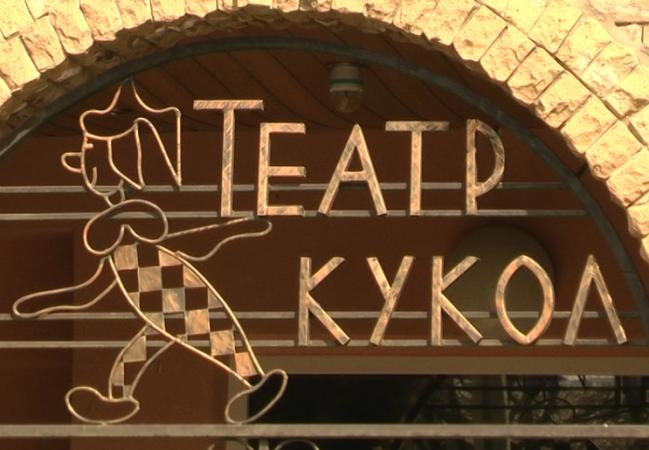
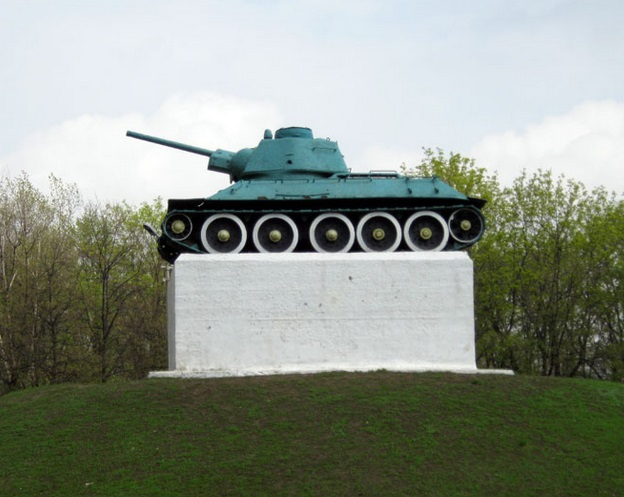
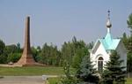

История существования театра кукол в Горловке началась в феврале 2001 года. Инициатором создания детского театра был бывший городской голова В. А. Рогач, портрет которого ныне висит на самом видно месте в фойе театра кукол. Небольшой зал театра, вмещающий 70 зрителей, уже многие годы является любимым местом для детворы начиная от 2 лет
 Сквер им. Советской Армии возле кинотеатра "Украина" в центре Горловки открыт в 1961 г. Вскоре над братской могилой танкистов, захороненных в этом сквере, был насыпан холм и установлен танк Т-34. Танк, который возвышается на холме, является памятником - символом в честь всех освободителей города от захватчиков и не принадлежит конкретному герою.
В мемориальном комплексе - группа могил борцов за Советскую власть в Донецке похоронены 26 человек в 1 братской и 4 одиночных могилах. В 1957 году рядом с группой могил установлен обелиск из серого полированного гранита, на котором написано «Борцам за советскую власть». У подножия обелиска: вырезанная в граните пятиконечная звезда и вечный огонь.